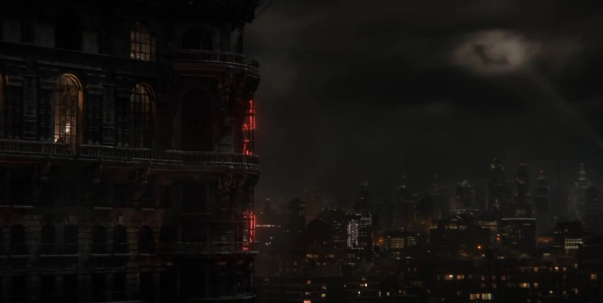

Formulario N.º 2024-OZ · Denuncia anónima
¿Viste algo en Gotham? ¿Encontraste un error en el archivo o tenés un dato para sumar? Dejá tu mensaje. Alguien lo va a leer… y quizás responda.
Tu identidad queda protegida por el archivo.
Gracias, testigo. Tu mensaje ya está en el cielo de Gotham. Si alguien lo ve, vas a tener noticias.
Proyecto fan sin servidor: por ahora, los mensajes no se guardan ni se envían a ningún lado.
Señal activaAlguien está mirando la ciudad esta noche.